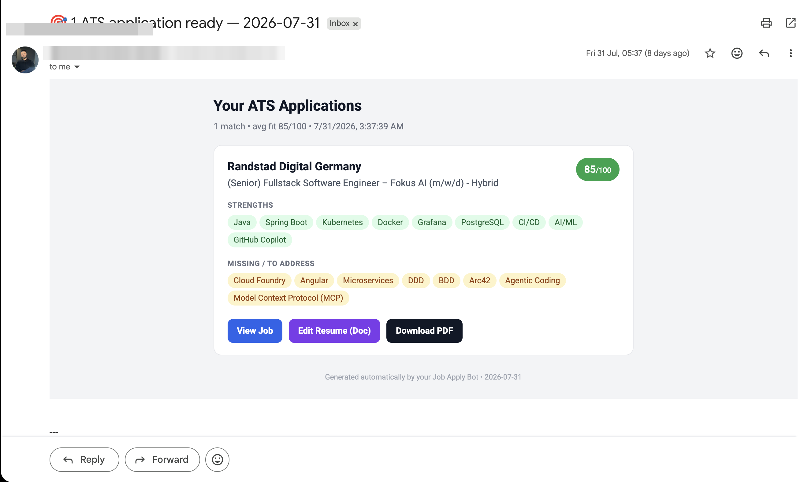
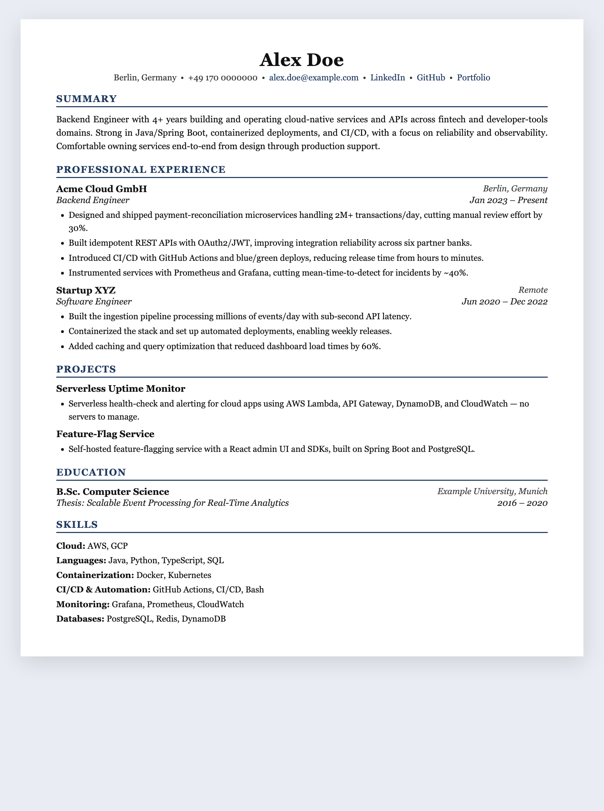
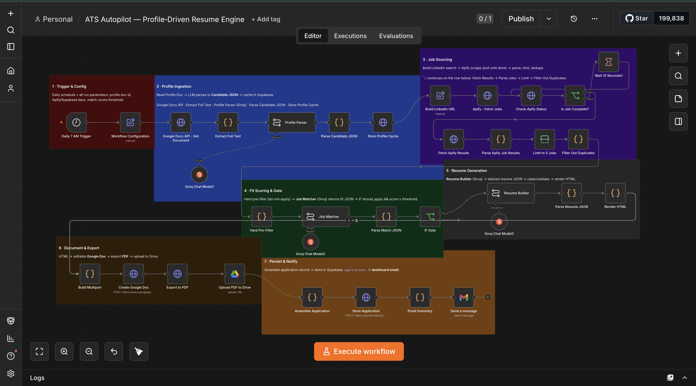

An automation that finds relevant jobs, decides whether each is worth applying to, and writes a job-specific résumé — as an editable Google Doc and a PDF — every morning, hands-off.
A rich master profile drives everything. The engine only spends effort on roles that actually fit.
Pulls LinkedIn postings from the last 24 hours for your target titles and locations.
An LLM returns a match score, strengths, and missing skills — low-fit jobs are dropped before any résumé is written.
Selects and rephrases real experience per job description. A “do-not-claim” list keeps it honest.
Generates a Google Doc you can tweak, plus a matching PDF exported from the same source.
Every application — score, keywords, links, metadata — is stored in Postgres for tracking.
A daily summary with fit badges, strength/missing chips, and one-click links to each résumé.
One linear pipeline in n8n. The only branch is the fit-score gate.
Daily schedule and all run parameters in one place.
Profile Doc → Candidate JSON, cached in Supabase.
Build search → Apify scrape (poll) → parse, limit, dedupe.
Score each job; only should_apply & score ≥ threshold pass.
Tailored résumé JSON → validate → render HTML.
HTML → editable Google Doc → native PDF export → Drive.
Store the application record and send the dashboard email.


